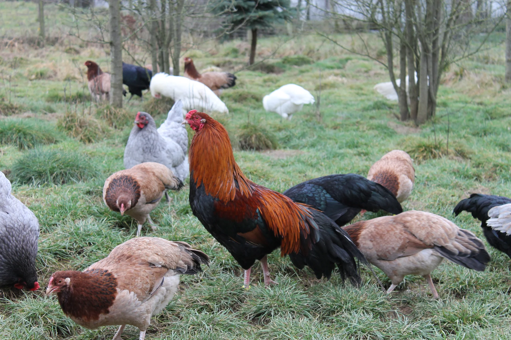
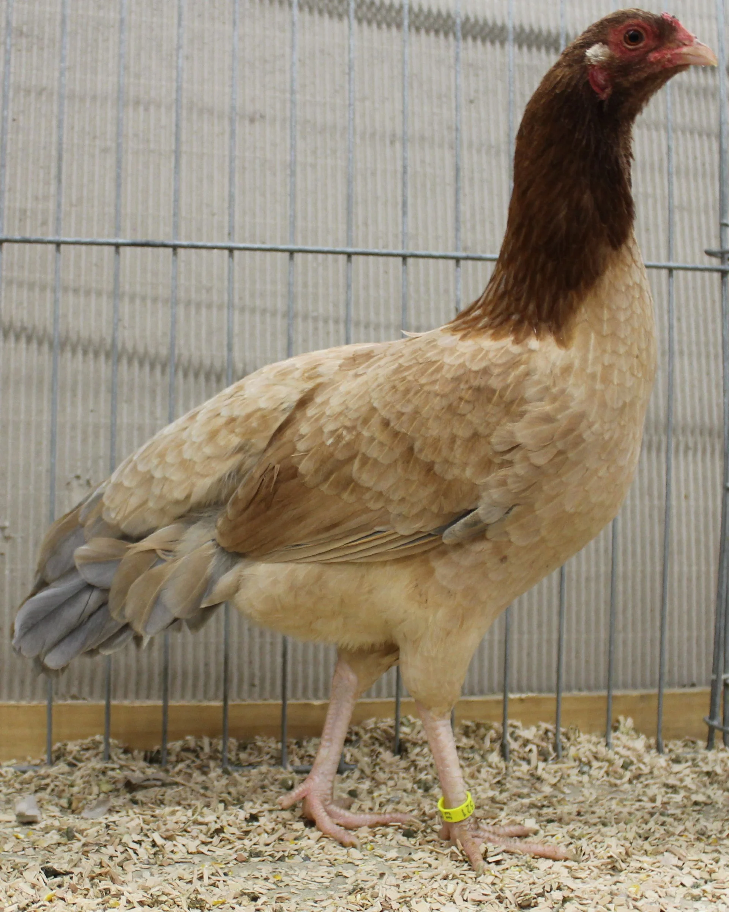
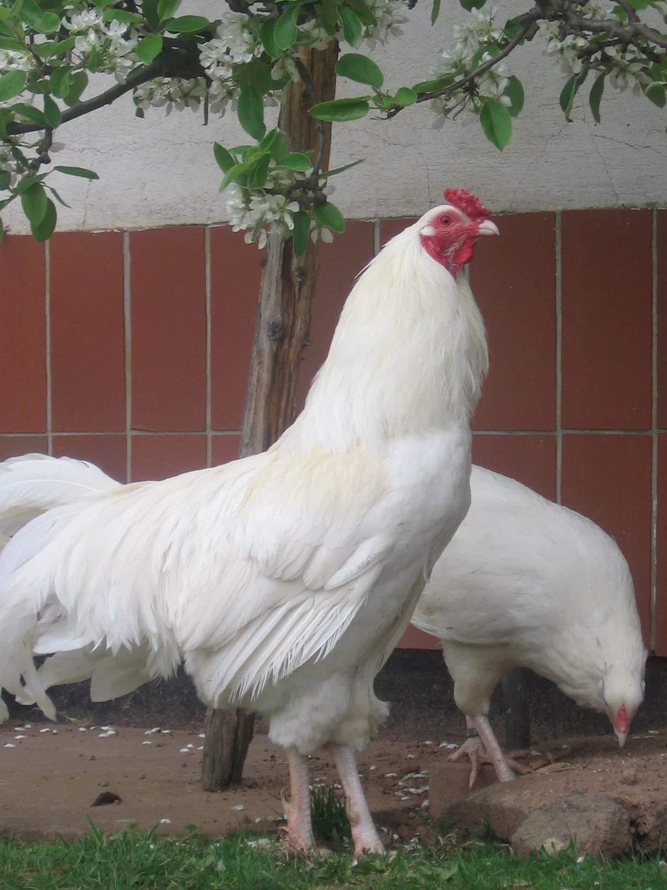

Cubalaya: la cubana de cola larga y muchos colores

La Cubalaya es la gallina autóctona de Cuba, creada en el siglo XIX a partir de aves de combate asiáticas (malayas y de Sumatra) llevadas a la isla a través de Filipinas, cruzadas con gallinas locales. Es, por tanto, una raza de origen oriental criada en el Caribe, y su nombre une Cuba y el gallo malayo («Cubalaya»). Se seleccionó por su porte erguido, su cola larga y su carácter, y se convirtió en el ave de corral típica de las fincas cubanas. En Europa se cría sobre todo como raza ornamental y de exposición, apreciada por su silueta inconfundible y su variedad de colores.
Origen e historia
La Cubalaya es la gallina autóctona de Cuba, creada en el siglo XIX a partir de aves de combate asiáticas (malayas y de Sumatra) llevadas a la isla a través de Filipinas, cruzadas con gallinas locales. Es, por tanto, una raza de origen oriental criada en el Caribe, y su nombre une Cuba y el gallo malayo («Cubalaya»). Se seleccionó por su porte erguido, su cola larga y su carácter, y se convirtió en el ave de corral típica de las fincas cubanas. En Europa se cría sobre todo como raza ornamental y de exposición, apreciada por su silueta inconfundible y su variedad de colores.
Características físicas
La gallina: ave de tamaño medio, de unos 2 kg, de porte erguido, casi vertical, con el pecho prominente, la cola larga y llevada baja, casi horizontal, y el cuello largo. Su cresta es de guisante, pequeña, y las orejillas son rojas. Las patas son de color pizarra o amarillas según la variedad, limpias y de longitud media.
El gallo: de 2,5 a 3 kg, con el mismo porte erguido y la cola aún más larga y baja: sus hoces son largas, anchas y curvadas, y se llevan por debajo de la horizontal, como una cola de faisán. Es un gallo de silueta espectacular, que parece estar siempre en guardia. Su cresta de guisante es pequeña y su cara es roja y expresiva.
Variedades de plumaje
Es una de las razas con más colores de este catálogo: blanca, negra, azul-canela (plumaje azul grisáceo con tonos canela, la de la gallina joven de la foto de esta ficha), roja, trigueña y moteadas. Cada variedad tiene sus criadores, y en un mismo corral se pueden ver gallos rojos y negros con gallinas blancas y azul-canela, como en la foto de grupo de esta ficha.
Puesta
Pone en torno a 150 huevos al año, de color blanco o crema y tamaño pequeño. Es una puesta modesta: la Cubalaya no es una ponedora, y su huevo es más pequeño que el de las razas de puesta. La gallina es clueca con frecuencia y buena madre.
Carácter
Activa, alerta y algo arisca: es una gallina de origen combatiente, siempre atenta, que se mueve con rapidez y que no se deja coger con facilidad. El gallo es territorial y puede ser agresivo con otros gallos, por lo que no conviene tener dos gallos Cubalaya en el mismo corral. Con las personas es manejable si se la acostumbra desde pollita, pero no es una raza de regazo: es una raza de corral y de exposición.
Cuidados, alimentación y alojamiento
Es una raza de clima cálido, hecha para el Caribe: soporta muy bien el calor y la humedad, pero sufre con el frío, por lo que en invierno necesita un gallinero seco y resguardado. Necesita espacio para moverse y lucir su cola: un corral amplio con perchas altas (le gusta dormir en alto) y sin obstáculos bajos que le rompan las hoces. Come pienso de puesta o de mantenimiento, grano y forraje; no es una raza de gran apetito, pero agradece la variedad. Hay que proteger su cola larga de la humedad y del barro, que le estropean el plumaje, y vigilar que los gallos no se peleen.
Para qué sirve
Ornamental y de exposición en primer lugar: su porte erguido, su cola larga y baja y su variedad de colores la hacen una de las razas más vistosas del corral. También es ave de carne ligera en Cuba, donde el pollo Cubalaya es tradicional, y una raza de conservación genética por su origen asiático. En una granja rentable, su papel es el de raza de imagen: la que se fotografía y la que se enseña a los visitantes.
Curiosidades
Su cola se lleva tan baja que en los gallos viejos casi roza el suelo; es la única raza cubana reconocida internacionalmente; su origen pasa por Filipinas, lo que la emparenta con las razas de combate asiáticas; y la foto de grupo de esta ficha, con un gallo rojo y negro en el centro y gallinas de varios colores en un prado, es la mejor foto de grupo de todo el lote de 21.
Fotos de la raza


Fotos y licencias
Las fotos de esta ficha son fotografías reales con licencia libre de uso comercial. La licencia CC BY-SA 3.0 exige atribuir al autor y compartir las adaptaciones bajo la misma licencia. Las fotos se publican en WebP a partir de los originales, con su autor y su licencia. Es la raza con la mejor foto de grupo del catálogo.
- Grupo (foto principal): Kruppert — CC BY-SA 3.0 (08-12-2011).
- Gallina joven (azul-canela): Kruppert — CC BY-SA 3.0 (27-11-2011).
- Gallo (blanco): Kruppert — CC BY-SA 3.0 (16-04-2009).


Fuentes
Datos raciales contrastados con la información de la raza: Cubalaya (The Livestock Conservancy).
Prepara tu lote y tu gallinero
Antes de comprar aves, calcula el espacio que necesitas, lo que costará alimentarlas y cuándo tendrás los primeros huevos.
Comprueba la normativa local: algunas zonas exigen registrar las aves o avisar al ayuntamiento. Revisa las normas de tu municipio antes de criar.